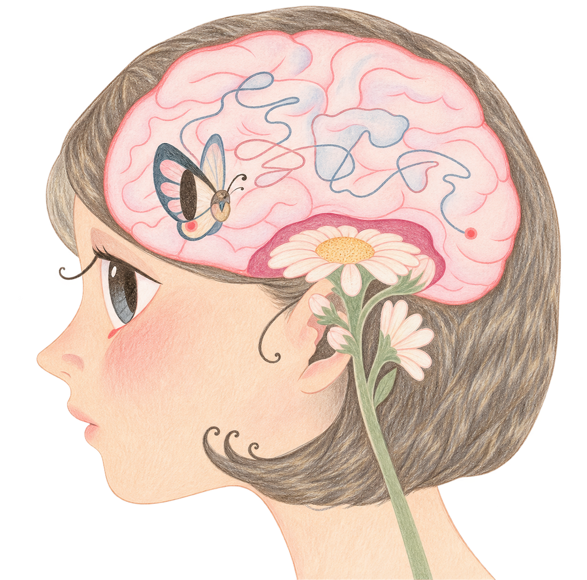

Hvis du er i krise eller har
tanker om selvmord,
så kontakt Livslinien på:
+45 70 201 201
RÅD - SELVOMSORG - BALANCE - RO - NÆRVÆR - MINDFULNESS - FØLELSER - PERSONLIG UDVIKLING - SELVKÆRLIGHED
Vores mentale rejser er forskellige, og der findes ikke én universel løsning på at opnå indre ro og mental trivsel. Vi har alle forskellige behov og måder at håndtere livets udfordringer på. Derfor tilbyder vi forskellige værktøjer og tilgange, der støtter dig i at finde det, der fungerer for netop dig. Med fokus på dine individuelle behov ønsker vi at skabe plads til udvikling, større balance og varig trivsel.
Tal med din egen læge om, hvordan du har det, og få hjælp til at finde den rette støtte eller behandling.
Del dine tanker med en, du stoler på, eller kontakt en rådgivning, hvor du kan blive lyttet til uden at blive dømt.
Udforsk strategier, øvelser og ressourcer, der kan hjælpe dig med at håndtere stress, forstå dine følelser og skabe mere balance i hverdagen.
Louise er 21 år og har gennem store dele af sit liv kæmpet med tankemylder og overtænkning. Hun har ofte oplevet, at tankerne fylder mere, end hun selv ønsker, og at selv de mindste situationer kan sætte gang i en lang række bekymringer og spørgsmål.
For Louise har det været en rejse at lære sig selv bedre at kende, forstå sine tanker og finde måder at skabe mere ro i hverdagen på.
For måske kan hendes historie minde dig om, at du ikke er alene med dine tanker.
Tankemylder og overtænkning er noget, mange mennesker oplever i løbet af livet. Det kan føles som om, tankerne aldrig står stille, og at hjernen hele tiden forsøger at finde svar på spørgsmål, der måske ikke engang har et konkret svar.
Nogle tanker handler om ting, der allerede er sket, og som man bliver ved med at gennemgå. Andre handler om fremtiden og alle de situationer, der potentielt kan gå galt.
Det kan gøre det svært at være til stede i nuet, finde ro i kroppen og nogle gange også falde i søvn.
Det er helt normalt at have perioder med mange tanker. Men hvis overtænkningen begynder at påvirke din søvn, koncentration eller generelle trivsel, er det vigtigt at tage dine oplevelser alvorligt.
Nogle gange hjælper det at sætte ord på de ting, der fylder. Uanset om du har brug for
at stille spørgsmål, dele dine tanker eller bare
undersøge dine muligheder, er du velkommen til at
tage det første skridt.
Uanset om du har brug for at stille spørgsmål, dele dine tanker eller bare undersøge dine muligheder, er du velkommen til at tage det første skridt.
Vi ved, at det ikke altid er nemt at sætte ord på det, der fylder. Måske ved du ikke helt, hvor du skal begynde, eller hvilken hjælp du har brug for. Det er helt okay. Hos os er der plads til både de store og små tanker, og ingen spørgsmål er for små til at blive taget alvorligt.